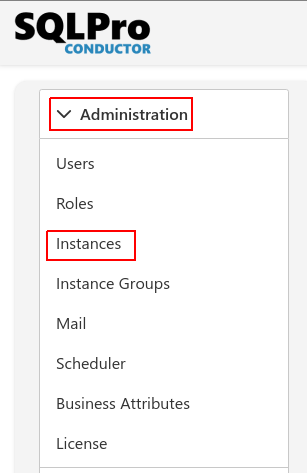

Introduction
Instance installation would be used for installing one machine at a time. Without instances installed you can't make use of the system.
Instance Installion
The first step select the settings Icon and choose instances:

Next, choose the Add Instance button on the top right corner:
Next, fill in the instance details and click Save.
Note
Use the Test Connection button to ensure that Conductor4SQL can reach this instance using the provided credentials. Although an instance can still be added even if there is no connectivity or if the credentials fail. This will allow you to add instances that are currently offline.
There are currently four instance types:
- Azure SQL Server
- Microsoft SQL Server
- MySQL
- PostgreSQL
Newly added instances will appear in the instance list.
Bulk Installation
The bulk installation is ideal for installing multiple instances on one go using the export and import method like you would see on the screen shots below.
Note
In order to get the import template use the Export button to export the current list of instances. Use the csv file for creating your list of instances to import. Note that you can update existing instance credentials and business attributes in bulk by using this method. Finally also note that the Server Password field is not exported with the list of instances
Note
- "InstanceName" is a friendly name and the "FullName" is what the actual server/instance combination. e.g. the InstanceName might be "MSSQL AZURE PRODUCTION" but the FullName could be "MSSQL-PRODUCTION.UK.CLOUDAPP.AZURE.COM\SQL1"
- Passwords are not exported for security purposes.
Finally, select the Import button and then select your CSV file, to import your instances.
If you have Conductor4SQL Classic edition installed, select the Import Conductor4SQL Clients button and then fill in the instance name of your Central instance of Conductor4SQL. This will import all your existing Conductor4SQL Classic instances directly into SQLPro/SQLSense.